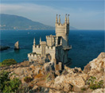

Ходорковский может стать фигурантом нескольких уголовных дел
Следствие пока не обращалось в суд за санкцией на заочный арест экс-главы ЮКОСа Михаила Ходорковского. Об этом ТАСС сообщила пресс-секретарь Мосгорсуда Ульяна Солопова. "К настоящему времени в столичные суды ходатайства следствия об избрании меры пресечения в отношении Ходорковского не поступало", - сказала она. Как сообщил ранее ТАСС информированный источник, Ходорковскому заочно предъявлено обвинение в причастности к убийству мэра Нефтеюганска Петухова в 1998 году. 11 декабря экс-глава ЮКОСа вызван на допрос. В настоящее время следствие располагает информацией, что Ходорковский находится за границей. Однако, если он будет уклоняться от явки в правоохранительные органы, следствие может объявить его в международный розыск, а также обратиться в суд за санкцией на заочный арест. Следствие пока не обращалось в суд за санкцией на заочный арест экс-главы ЮКОСа Михаила Ходорковского. Об этом ТАСС сообщила пресс-секретарь Мосгорсуда Ульяна Солопова. “К настоящему времени в столичные суды ходатайства следствия об избрании меры пресечения в отношении Ходорковского не поступало", - сказала она.
Другие новости по теме
Минэнерго РФ: Энергоснабжение Крыма восстановлено в полном объеме
В конце июня 2015 года Следст- венный комитет объявил о во- зобновлении расследования уголовного дела об убийстве мэра Нефтеюганска Владимира Петухова.
Футболиста «Динамо» Погребняка лишили водительских прав
По словам исследователя, анализ шедевра да Винчи дал неожиданные результаты - он обнаружил изображение еще одной женщины.